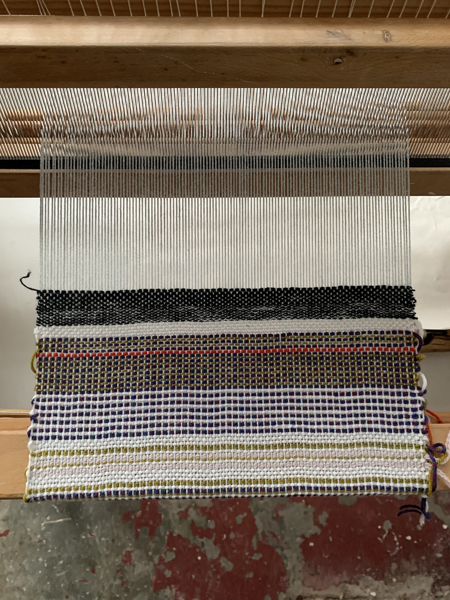
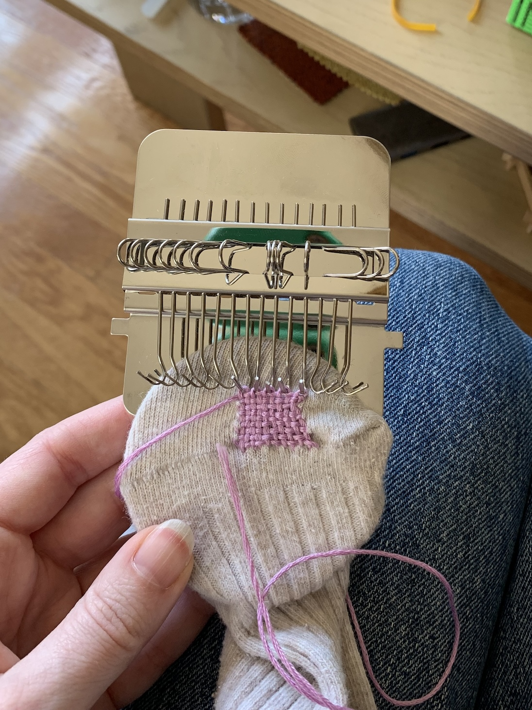
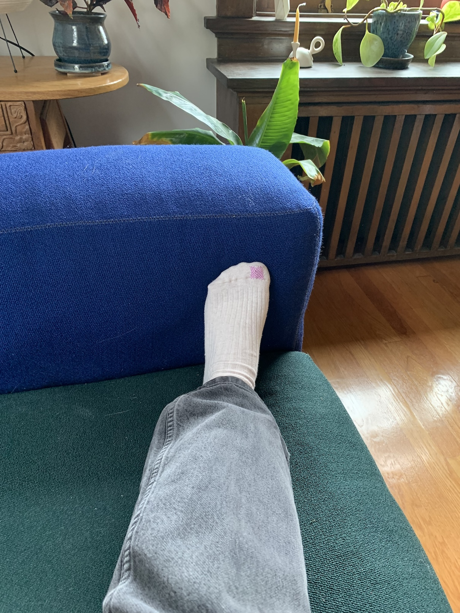

Miscellaneous
Weaving sampler


Mending
View from inside a t-shirt rendered as a 3-D mesh


Triaxial weaving

Natural dye using pomegranates and iron oxide


A kind of digital tapestry using text as input, created with OpenFrameworks